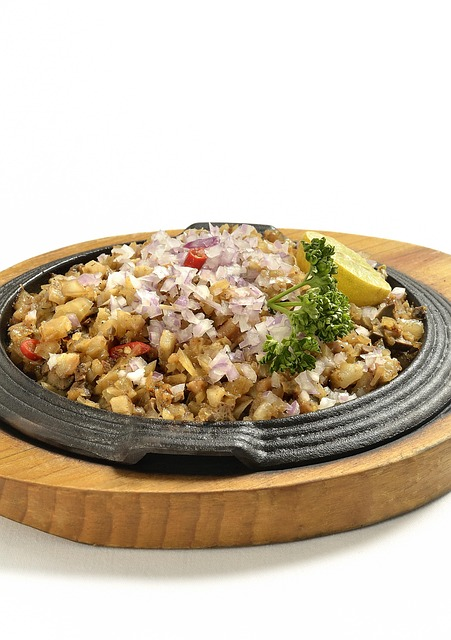

Home
Pork Sisig

Description
A popular Filipino dish made with chopped pork (traditionally pig’s face
and ears), onions, chili peppers, and seasonings, usually served sizzling
with a creamy, tangy flavor.
Ingredients
1 lb pork belly (or pork face, ears for authentic version)
1 onion (finely chopped)
2–3 chili peppers (sliced)
3 tbsp soy sauce
2 tbsp vinegar or calamansi juice
1 tsp minced garlic
2 tbsp mayonnaise
Salt and pepper to taste
1 egg (optional, for serving)
Steps
Boil and grill: Boil pork until tender, then grill or broil until
crispy.
Chop: Dice pork into small pieces.
Sauté: In a hot pan, sauté garlic, onions, and chili. Add chopped pork.
Season: Mix in soy sauce, vinegar, salt, and pepper.
Finish: Stir in mayonnaise, adjust flavor.
Serve: Place on a sizzling plate, optionally crack an egg on top before
serving.
Tips for success
Use crispy grilled pork for authentic texture.
Adjust chili for spiciness level.
Add chicken liver for richer flavor (optional).
Serve hot on a sizzling plate with rice.